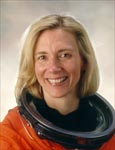

Lyndon B. Johnson Space Center
Houston, Texas 77058
|
National Aeronautics and Space Administration Lyndon B. Johnson Space Center Houston, Texas 77058 |
 |
Biographical Data |
||
SUSAN KILRAIN (COMMANDER, USN, RET.)
NASA ASTRONAUT (FORMER)
PERSONAL DATA: Born October, 24, 1961, in Augusta, Georgia. Married to Colin James Kilrain of Braintree, Massachusetts. She enjoys triathlons, martial arts, and playing the piano. Her parents, Joe and Sue Still, reside in Martinez, Georgia. Colin’s mother, Mrs. Terry Kilrain, resides in Braintree, Massachusetts.
EDUCATION: Graduated from Walnut Hill High School, Natick, Massachusetts, in 1979. Master of Science degree in aerospace engineering from Georgia Institute of Technology, 1985.
ORGANIZATIONS: Association of Naval Aviation. Association of Space Explorers. The Georgia Tech Foundation.
SPECIAL HONORS: Distinguished Naval Graduate of Aviation Officer Candidate School; Distinguished Graduate of the United States Naval Test Pilot School, Class 103; Awarded the Defense Superior Service Medal, Defense Meritorious Service Medal, Navy Commendation Medal, Navy Achievement Medal, NASA Space Flight Medals (2), and the National Defense Service Medal. Ten Outstanding Young Americans Award by the United States Junior Chamber of Commerce. Daughter of the American Revolution, Good Scout Award, 1997.
EXPERIENCE: After graduating from undergraduate school, Susan worked as a Wind Tunnel Project Officer for Lockheed Corporation in Marietta, Georgia and earned her graduate degree. She was commissioned in 1985 and designated a naval aviator in 1987. Susan was selected to be a flight instructor in the TA-4J Skyhawk. She later flew EA-6A Electric Intruders for Tactical Electronic Warfare Squadron 33 in Key West, Florida. After completing Test Pilot School, she reported to Fighter Squadron 101 in Virginia Beach, Virginia for F-14 Tomcat training. She has logged over 3,000 flight hours in more than 30 different aircraft.
NASA EXPERIENCE: Susan reported to the Johnson Space Center in March 1995. Following a year of training, she worked technical issues for the Vehicle Systems and Operations Branch of the Astronaut Office. She also served as spacecraft communicator (CAPCOM) in mission control during launch and entry for numerous missions. A veteran of two space flights, she has logged over 471 hours in space. She flew as pilot on STS-83 (April 4-8, 1997) and STS-94 (July 1-17, 1997). She most recently was the Legislative Specialist for Shuttle for the Office of Legislative Affairs at NASA Headquarters, Washington D.C. Susan retired from the Astronaut Office in December 2002 and from the Navy in June 2005.
SPACE FLIGHT EXPERIENCE: Her first mission, STS-83 (April 4-8, 1997), was cut short because of problems with one of the Shuttle’s three fuel cell power generation units. Mission duration was 95 hours and 12 minutes, traveling 1.5 million miles in 63 orbits of the Earth.
STS-94 (July 1-17, 1997) was a re-flight of the Microgravity Science Laboratory (MSL-1) Spacelab mission, and focused on materials and combustion science research in microgravity. Mission duration was 376 hours and 45 minutes, traveling 6.3 million miles in 251 orbits of the Earth.
JUNE 2005
{kind=link}